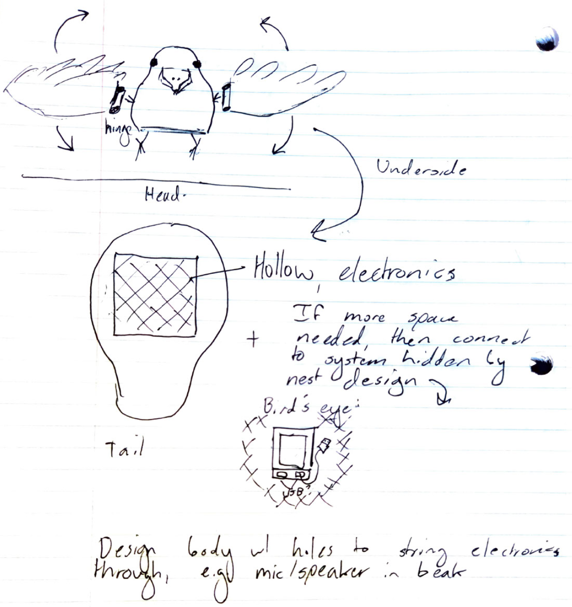
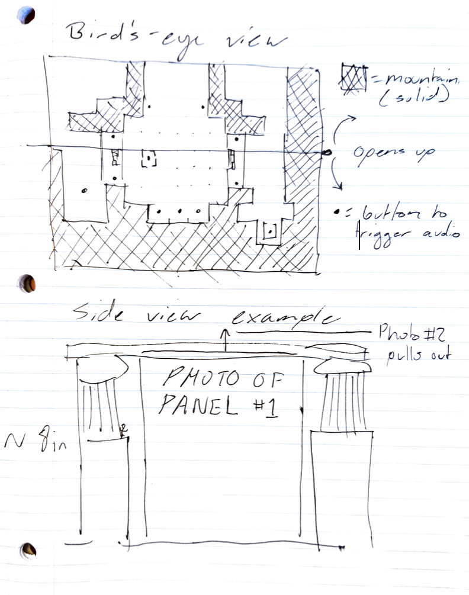
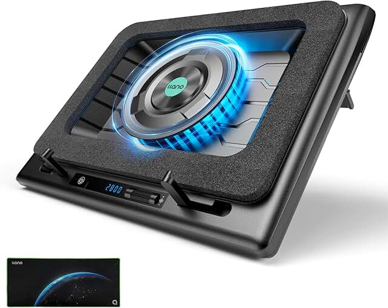

PROJECT IDEA #1: Saṃskr̥taśikṣakaḥ Śukaḥ (Sanskrit teaching parrot)

The goal of this project is to build a cute little bird buddy who can assist me in language learning through speech and vocabulary. Ideally, it will be entirely customizable and open to repogramming as I expand my vocabulary, read new texts, or start new languages. I want the bird to say a word or phrase out loud (drawing from a set of recordings I've made) then wait for my answer before judging its veracity. As such, it will need to be able to emit sound and detect speech. It would be nice if, even outside of studying, I could give it certain commands like to shuffle through a vocab list or something else.
I think it would be fun if its electronics were hidden by a nest. I think either battery or wireless charging would be best, with a preference for the latter, as then you could just place the bird into his home and he would wake up (how cute?). As for the bird itself, he would be styled to look like a parrot as a reference to the parrot narrator in Bāṇabhaṭṭa's famous Kādambarī. A hollow frame with holes in key areas (like behind the beak) will allow the electronics to reach essential areas while remaining hidden. It'd be nice to incorporate some moving parts if there is room in the electronic scheme.
PROJECT IDEA #2: Interactive Elephanta Exhibit

As any senior knows, producing a thesis requires an immense amount of work that yields an abundance of research, much of which will never get to see the light of day, let alone reach the ears of anyone outside of academia. As such, I figured it might be fun and rewarding to produce a mini exhibition on the temple I'm writing about for my thesis. It would be a diorama of sorts, modelled proportionally after the measurements of the temple at Elephanta. Each sculptural panel that adorns the perimeter of the interior would feature a photo from my research as well as a button in front which, when pressed, would execute an audio recording of me explaining the significance of that carving. The style would be informative yet engaging, with a more narrative tone than simply scholarly. It would be cool to include a slot behind each panel where I could store additional photos - for instance, of a relevant detail - that could be rolled out for view alongside the recording.
I'd like to recreate the surrounding environment of the temple as well, including bits of foliage present during the monsoons and modelling the rock in some way. It would be good to find a convenient spot to store citations and image info as well.
PROJECT IDEA #3: Gaming Laptop Cooler

Conceptually, I feel like laptop cooling pads ought to be fairly simple: include a fan or two to improve airflow, create a seal between the pad and the laptop, and allow a space for ventilation. However, I simply cannot find an affordable option online. So, my next best option would presumably be to build it myself.
In addition to the aforementioned requirements, the pad should also be able to be angled so as to raise the laptop well above flat surfaces. A USB connection would be the most sensical way to power it as it could then just plug directly into my device. The RPM of the fans should be adjustable and optionally turned off for when I'm not conducting resource-intensive tasks. Another interesting option is to consider improving the exhaust of my device by creating an attachment that can pull air rather than push it.